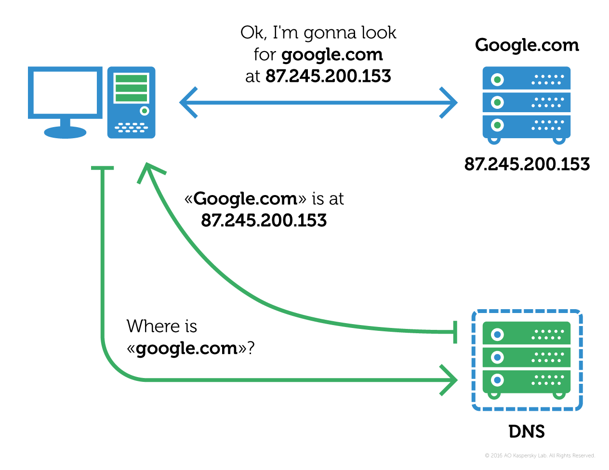

Arquitectura Web
▶️ Introducción
Un sitio web es un conjunto de pàginas, elementos multimedia, información que estan alojados en un servidor.
üåä Flujo de aplicaciones web
Cuando se escribe la dirección de una página web en la barra del navegador o se hace click sobre un enlace se está haciendo una petición para visualizar una página web y el contenido relacionado con esta.
La petición se envía desde el ordenador hasta el servidor del proveedor de internet. Este pasa la petición por una serie de servidores interconectados que resuelven la dirección hasta que llega al servidor donde se alojan los archivos de la web.
El servidor que aloja la página web responde la petición enviando el contenedor de vuelta mediante un camino similar por los servidores de la red. Finalmente estos archivos son presentados en el explorador.

üìõ Dominio
Los navegadores acceden a los sitios web mediante una dirección IP (Internet Protocol), por ejemplo: 192.27.12.60. Obviamente es dificil acceder a las páginas web mediante las direcciones IP por eso se crearon los dominios. Estos permiten ser recordados con mayor facilidad y ahorran direcciones IP ya que varios dominios pueden apuntar a la misma.
Los servidores DNS (Domain Name Systrm) son los encargados de traducir los dominios a direcciones IP.  Fuente imagen
Ô∏èÔ∏èÔ∏èüè† Alojamiento
El hosting o alojamiento web es el espacio donde se aloja una página web para que sea visible en Internet. Existen distinitos tipos de hosting según la organización en el servidor:
- Hosting compartido: varios alojamientos comparten el mismo servidor. Acostumbra a ser más económico pero los recursos son compartidos entre los distintos hostings.
- Hosting dedicado: un solo servidor para un alojamiento. Permite tener el control y todos los recursos para un solo hosting.
- VPS, sevidor virtual privado: se crea un servidor virtual para un alojamiento. Es flexible y no se comparten los recursos con otros alojamientos.
- Cloud hosting: se paga por el uso de recursos que se necesitan en cada momento. Los recursos acostumbran a ser ilimitados.
üöâ CDN
CDN (Content Delivery Network) es un conjunto de ubicaciones en el mundo, que redistribuyen localmente el contenido de los servidores y guardan en caché los archivos que no necesitan actualización permanente.